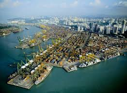
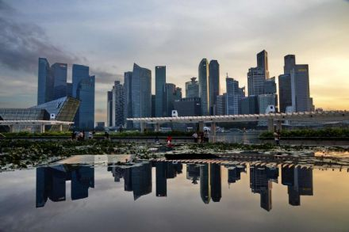
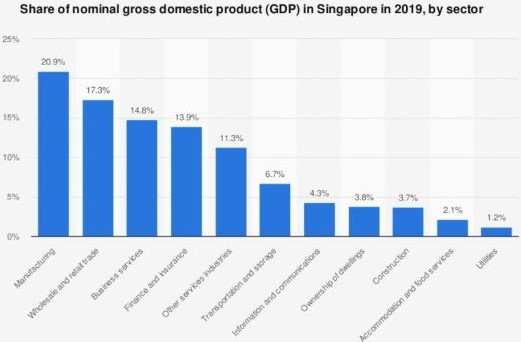

Economia Statului Singapore este unul dintre cele mai dezvoltate state din Asia de Sud-Est. Orașul este un important centru economic și industrial din zonă. Singapore are o economie foarte dezvoltată, bazată pe economia de piață. Economia depinde foarte mult de exporturile din rafinarea mărfurilor importate, în special în producție. Industria prelucrătoare a constituit 26% din PIB-ul din Singapore în anul 2005. Industria manufacturieră este bine diversificată în electronică, rafinarea petrolului, produselor chimice, inginerie mecanică și produse ale științei biomedicale. În 2006, Singapore a produs circa 10% din producția mondială de cipuri electronice. Singapore este cel mai mare port din lume din punct de vedere al tonajului transportat. Singapore este al patrulea cel mai mare centru comercial de schimb valutar din lume. Singapore a fost evaluat ca având cel mai ușor mediu de afaceri din lume, cu mii de expatriați străini care lucrează în corporațiile multi-naționale. Orașul-stat oferă și slujbe în industrie pentru zeci de mii de străini din întreaga lume. Ca rezultat al recesiunii globale și a unei scăderi în sectorul tehnologiei, PIB-ul țării s-a micșorat cu 2,2% în 2001. Pentru a remedia problema Comitetului Economic de Examinare (CEC) a fost înființat în decembrie 2001, și acesta a recomandat mai multe schimbări în politică, cu scopul de a revitaliza economia. După această recesiune, ajutată în mare parte și de îmbunătățirile din economia mondială; economia din Singapore a crescut cu 8,3% în 2004, 6,4% în 2005 și 7,9% în 2006. În prima jumătate a anului 2007, economia a crescut cu 7,6%. Prognoza de creștere pentru întregul an este de așteptat să fie între 7% și 8%, deși estimarea inițială era de 5%-7%. La 19 august 2007, prim-ministrul Lee Hsien Loong a anunțat că economia este de așteptat să crească cu cel puțin 4%-6% anual, în următorii 5-10 ani. PIB pe cap de locuitor în 2006 a fost de US $ 29474. În septembrie 2007, rata șomajului era de 1,7%, cea mai mică de un deceniu, care este mai bună decât nivelul de dinainte de criza din Asia. Ocuparea forței de muncă a continuat să crească insistent pentru că economia și-a menținut ritmul de extindere rapid. Pentru întregul 2007, economia din Singapore a crescut cu 7,5% și a atras investiții de 16 de miliarde de euro în active fixe de producție și investiții, în proiecte care au generat 3 miliarde $ din totalul de cheltuieli de afaceri din domeniul serviciilor. Guvernul se așteaptă ca economia din Singapore să crească cu 4,5%-6,5% în anul 2008. Singapore este o destinație de călătorii foarte populară, astfel, turismul este una dintre cele mai mari industrii. Aproape 9,7 milioane de turiști au vizitat Singapore în anul 2006. Centrul comercial Orchard Road din Singapore este una din cele mai cunoscute și populare atracții turistice. Pentru a atrage și mai mulți turiști, guvernul a decis să legalizeze jocurile de noroc și a permis construirea a două stațiuni cazino la Marina Sentosa de Sud în 2005. Mâncarea a fost, de asemenea, puternic promovată ca un punct de atracție pentru turiști, Festivalul Alimentar de la Singapore organizat în luna iulie în fiecare an sărbătorind bucătăria din Singapore. Singapore se profilează rapid, ca un important centru de turism medical - circa 200000 străini solicitând anual îngrijiri medicale. Țelul este ca Singapore să ofere anual servicii medicale pentru un milion de pacienți străini până în 2012 și de a genera venituri 3 miliarde de dolari din această industrie. Guvernul se așteaptă că această inițiativă ar putea să creeze aproximativ 13000 de noi locuri de muncă în cadrul industriilor de sănătate. |